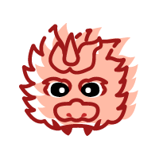
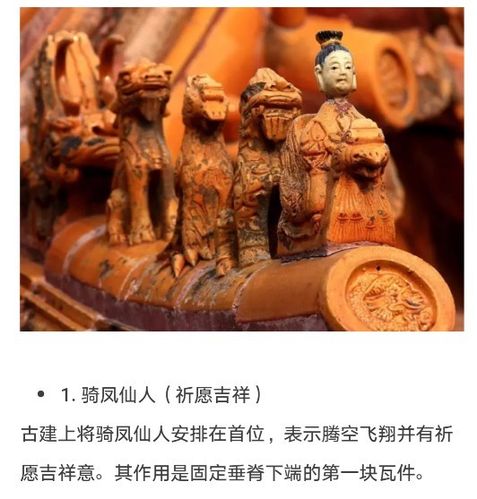
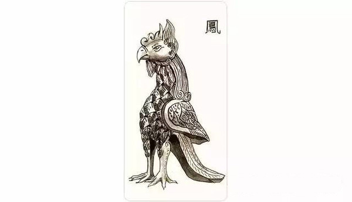
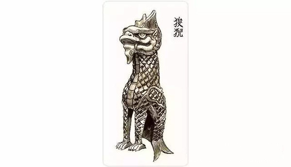
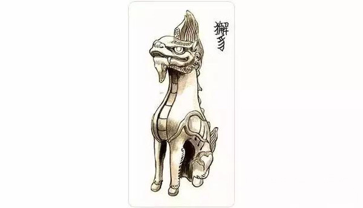
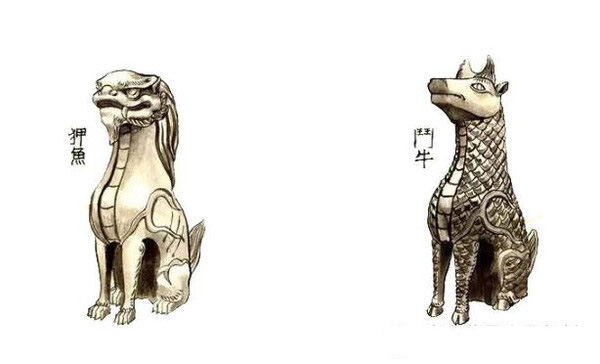

亲爱的小伙伴，在游览故宫的时候，你注意过宫殿的屋顶上有什么吗
你可能要说了，屋顶上除了瓦片还有什么好玩的。其实，在中国古典建筑屋顶上藏着很多小秘密。
不信？你看！在故宫近万间宫殿、门庑屋顶的屋脊上，都装饰着一些琉璃饰兽。除了正脊上的龙形大吻，最引人注目的就是岔脊、垂脊和戗脊的小兽了。它们整整齐齐，造型各异，生动活泼。你可别小看它们，在我国古代神话中，它们都是吉祥的化身。
那么，这些饰兽都是些什么动物？有什么来历？为什么会站在屋脊上呢？现在，就来认识一下这些神秘的小家伙吧！这些小兽说，它们是“五脊六兽”。所谓“五脊”，是指屋顶上横着的一根“正脊”和垂下来的四根“垂脊”。而关于“六兽”的说法却有很多，其中一种说法是，在一道垂脊上，吞兽 + 五只蹲兽──狻猊、獬豸、狎鱼、斗牛、凤，就是“六兽”。 中国古建大都为土木结构，屋脊是由木材上覆盖瓦片构成的。檐角最前端的瓦片因处于最前沿的位置，要承受上端整条垂脊的瓦片向下的一个“推力”；同时，如毫无保护措施也易被大风吹落。因此，人们用瓦钉来固定住檐角最前端的瓦片，在对钉帽的美化过程中逐渐形成了各种动物形象，在实用功能之外进一步被赋予了装饰和标示等级的作用。
唐宋时，还只有一枚兽头，以后逐渐增加了数目不等的蹲兽，到了清代形成了今天常见的“仙人骑凤”领头的小动物队列形态。 “骑凤仙人”，民间也叫做“仙人骑鸡”。这个“仙人”究竟是谁？为什么在檐角的最前端？为什么骑着凤凰？ 相传他是齐闵王，就是滥竽充数里的那个国君，在一次作战中失败，被敌人追到一条大河边，眼看就要走投无路了。突然，一只凤凰飞到眼前，国君急忙骑上凤凰，化险为夷。因此人们把他放在建筑脊端，寓意着逢凶化吉。 
龙（一为鸱吻），龙是皇权的象征，因此排在第一位。
 民间传说中的百鸟之王。象征尊贵、有圣德之人。凤是吉瑞的象征，亦是皇后的代称。
 狻猊是传说中龙生九子之五子，形如狮，能食虎豹等猛兽，亦是威武百兽率从之意，人们常叫它金猊或者青狮子，喜欢烟火缭绕之处。所以除了在屋顶上，还能在香炉的脚部上看见它，据说这只神兽性情喜静，被收作文殊菩萨的坐骑。但在《西游记》里，它却耐不住寂寞，跑到凡间成了假乌鸡国国王，后来又和白象王、大鹏鸟占山为王，闹腾得很……不知哪个才是狻猊真正的性格呢？
 獬豸体形大者如牛，小者如羊，类似麒麟，全身长着浓密黝黑的毛，双目明亮有神，额上通常长一角，俗称独角兽。在古代，獬豸是执法公正的化身。发现奸邪的官员，獬豸就用角把他顶倒，吃下肚子。所以古时司法官员的帽子也叫“獬豸冠”，以示公正无私。
 狎鱼和斗牛，前者是海中异兽，兴风作雨治火灾；后者是镇水虬龙，镇压水患。两只神兽属性相克，却又和平相处，一起为宅邸祈福、避灾。传说的海中异兽，它和狻猊都是兴云作雨，灭火防灾的神兽。龙生九子排行第八。斗牛，非宠物斗牛...传说中是一种虬龙，身有鱼鳞，为镇水兽。明朝赏赐的三品官服上亦有斗牛，称斗牛服。
太和殿的屋脊上用到个走兽，这个除了表示皇权的至高无上，也有只有皇帝才能享有“十十”的意思。这十个依次是：龙、凤、狮子、天马、海马、狻猊、押鱼、獬豸、斗牛、行什。它们的数量随着建筑等级的降低而递减，小兽的减少是从最后一只依次往前减的。数目越多，表示级别越高。故宫太和殿用了十个，天下无二；皇帝居住和处理日常政务的乾清宫，地位仅次于太和殿，用九个；坤宁宫原是皇后的寝宫，用七个；妃嫔居住的东西六宫，用五个；某些配殿，用三个甚至一个。